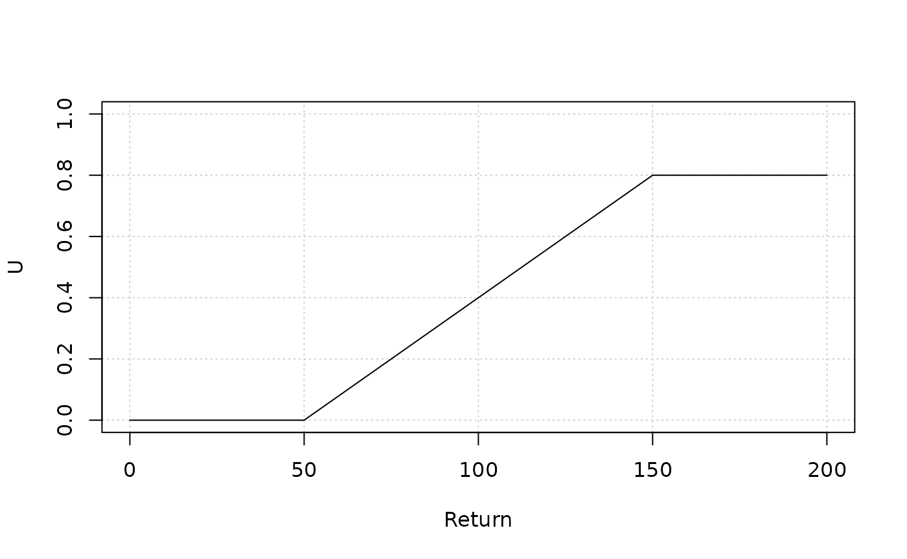
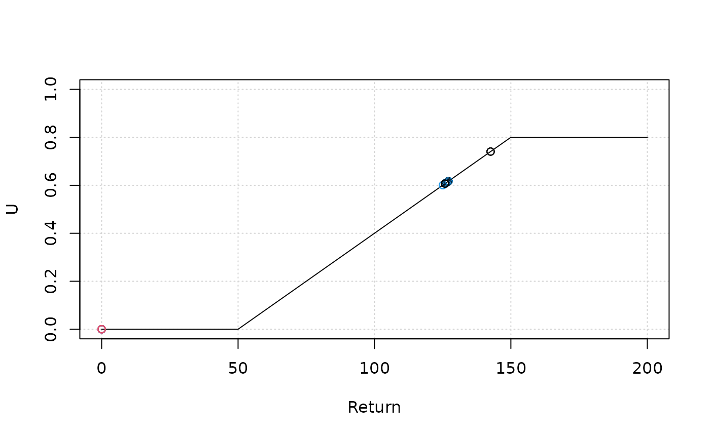

Custom brood and catch functions
2026-09-05
Source:vignettes/custom-function.Rmd
custom-function.RmdCustom brood function
Default hatchery assumptions
Integrated hatchery programs may balance taking sufficient brood to reach release targets while minimizing gene flow of traits that favor juvenile freshwater survival in the hatchery environment. To minimize this gene flow, some proportion of the brood should be natural-origin.
Important decisions for hatchery planning must be made as the system becomes more hatchery-dominant, i.e., as a larger proportion of the population is hatchery-origin.
If there is sufficient return, does the hatchery prioritize production or the natural-ness of the population?
In salmonMSE, the various default settings for hatchery production roughly follow those from the All-H Analyzer. Users specify the target releases and the target pNOB (the proportion of brood that is natural-origin). Importantly, these settings prioritize hatchery production at the cost of PNI management (PNI is a metric of natural vs. hatchery influence on the population, higher values indicate higher natural influence). If there is sufficient return but few natural-origin fish, then brood is continually taken to achieve target releases and the realized pNOB will be lower than the target.
An additional assumption of the default settings is that broodtake is non-selective with respect to age.
Writing the function
Alterations of the brood mechanics can be achieved with custom brood rule functionality in salmonMSE.
This feature allows the user to write a function in R that implements flexible rules that determine the brood composition given the return and relaxes the two assumptions of (1) prioritizing hatchery production at all costs and (2) non-selective brood with age.
Additional creativity in the brood rule is also possible, for example, turning off hatchery production when the return is too low (however, this could compound problems if survival in the hatchery is higher than in the natural environment!).
In the projection, once the brood is calculated from applying the custom function, the brood numbers is also reduced proportionally to ensure that the production target is not exceeded (in other words, the target is also the limit). This allows the user to focus on rules that determine the appropriate brood composition based on inputs (the return) rather than the outputs.
The custom function requires four input arguments, values of which are provided by salmonMSE to the function during the projection:
-
NOa matrix with rows for age and columns for life cycle groups (frequently 1) for natural-origin return available for brood (after escapement from marine fisheries and en-route return survival) -
HOa matrix with rows for age and columns for release strategies for hatchery-origin return available for brood -
straya matrix with rows for age and columns for release strategies for strays -
ma numeric for the mark-rate of hatchery-origin return
The output from the function needs to be a named list containing the following entries:
-
NOBa matrix, same dimensions asNO, for the natural-origin brood -
HOB_markeda matrix, same dimensions asHO, for the hatchery-origin brood that is marked -
HOB_unmarkeda matrix, same dimensions asHO, for the natural-origin brood that is un-marked -
HOB_straya matrix, same dimensions asstray, for the brood taken from strays
The hatchery-origin brood calculations is explicit regarding marked and stray status to facilitate hatchery programs based on mark rate and the presence/absence of strays.
The minimum acceptable function looks like this (this is a function for no hatchery production):
brood_function <- function(NO, HO, stray, m) {
NOB <- array(0, dim(NO))
HOB_marked <- HOB_unmarked <- array(0, dim(HO))
HOB_stray <- array(0, dim(stray))
output <- list(
NOB = NOB,
HOB_marked = HOB_marked,
HOB_unmarked = HOB_unmarked,
HOB_stray = HOB_stray
)
return(output)
}The function can then be passed to the f_brood slot in
the Hatchery object of the operating model:
Hatchery <- new("Hatchery")
Hatchery@f_brood <- brood_function
SOM <- new("SOM", Hatchery = Hatchery)
SMSE <- salmonMSE(SOM)Example 1
The first example describes a hatchery program where:
- Brood is preferentially selected among age 4 and age 5 (any younger fish may be too small to be selected as brood)
- Up to 70 percent of the return in those age classes can be taken for brood
- Brood is not selective regarding origin (for example, no marking is done)
brood_function <- function(NO, HO, stray, m) {
NOB <- array(0, dim(NO))
HOB_marked <- HOB_unmarked <- array(0, dim(HO))
HOB_stray <- array(0, dim(stray))
n_age <- nrow(NOB)
ptake <- rep(0, n_age)
ptake[4:5] <- 0.7
NOB[] <- ptake * NO
HOB_unmarked[] <- ptake * (1 - m) * HO
HOB_marked[] <- ptake * m * HO
HOB_stray[] <- ptake * stray
output <- list(
NOB = NOB,
HOB_marked = HOB_marked,
HOB_unmarked = HOB_unmarked,
HOB_stray = HOB_stray
)
return(output)
}Example 2
Here’s a more complex example where:
- No brood if the return is less than 500
- The brood does not exceed 33 percent of the return
- No more than 50 percent of the natural-origin return is used as brood
- Natural-origin fish always at least 75 percent of the broodtake (pNOB = 0.75)
- The mark rate is assumed to be 100 percent so that we can achieve rules 3 and 4
- Strays are negligible
A function that implements this program looks like this:
brood_function <- function(NO, HO, stray, m) {
NOB <- array(0, dim(NO))
HOB_marked <- HOB_unmarked <- array(0, dim(HO))
HOB_stray <- array(0, dim(stray))
if (sum(NO, HO, stray) >= 500 && m == 1) { ## Rules 1 and 5
max_brood <- 0.33 * sum(NO, HO, stray) ## Rule 2
NOB_max <- 0.5 * sum(NO) ## Rule 3
## Rule 4
NOB_total <- min(max_brood, NOB_max)
# pNOB = NOB/(NOB + HOB) -> HOB = (NOB - pNOB * NOB)/pNOB
pNOB <- 0.75
HOB_total1 <- (NOB_total - pNOB * NOB_total)/pNOB
HOB_total2 <- max(0, max_brood - NOB_max)
HOB_total <- min(HOB_total1, HOB_total2)
# This code distributes the brood proportionally among the various age classes in the return
if (sum(NO)) {
ptake_NOB <- NOB_total/sum(NO)
NOB[] <- ptake_NOB * NO
}
if (sum(HO)) {
ptake_HOB <- HOB_total/sum(HO)
HOB_marked[] <- ptake_HOB * HO
}
}
output <- list(
NOB = NOB,
HOB_marked = HOB_marked,
HOB_unmarked = HOB_unmarked,
HOB_stray = HOB_stray
)
return(output)
}Catch functions and harvest control rules
By default, salmonMSE simulates fixed harvest rates or stochastic harvest rates that are open-loop, i.e., independent of the abundance.
Users can write a function to write closed-loop harvest control rules, where the harvest rate is a function of the incoming return.
The custom function requires three input arguments, values of which are provided by salmonMSE to the function during the projection:
-
NOa vector by age for natural-origin fish (for terminal fisheries, this is the return. For preterminal fisheries, this is the juvenile abundance in the population) -
HOa vector by age for hatchery-origin fish -
ma numeric for the mark-rate of hatchery-origin return
The output is simply the updated harvest rate (a numeric) calculated
from NO, HO or m.
The minimum acceptable function looks like this (this is a function where harvest rate is independent of abundance):
catch_function <- function(NO, HO, m) {
u <- 0.1
return(u)
}The function can then be passed to the u_terminal or
u_preterminal slot in the Hatchery object of
the operating model:
Harvest <- new("Hatchery")
Harvest@u_terminal <- catch_function
SOM <- new("SOM", Harvest = Harvest)
SMSE <- salmonMSE(SOM)Example - harvest control rule
We will demonstrate an example that implements the following control rule:
- The terminal harvest rate (U) is zero if the return is less than 50
- The harvest rate increases linearly to 0.6 when the return size is 150
- At return sizes above 150, no further increase in harvest rate is allowed
catch_function <- function(NO, HO, m) {
Return <- sum(NO, HO)
if (Return < 50) {
u <- 0
} else if (Return > 150) {
u <- 0.8
} else {
slope <- 0.8/(150 - 50)
u <- slope * (Return - 50)
}
return(u)
}We can verify that we coded the function as intended:
Return <- seq(0, 200)
U <- sapply(Return, catch_function, HO = 0)
plot(Return, U, type = "l", ylim = c(0, 1), panel.first = grid())
To validate our code, let’s simulate the control rule with the simple operating model in salmonMSE. We can plot the projected returns and harvest rates (coloured points) which should lay on top of the control rule:
simple_SOM@Harvest@u_terminal <- catch_function
SMSE <- salmonMSE(simple_SOM)
Return_sim <- apply(SMSE@Return_NOS + SMSE@Return_HOS, c(1, 4), sum)
U_sim <- SMSE@UT_NOS[, 1, ]
plot(Return, U, type = "l", ylim = c(0, 1), panel.first = grid())
matpoints(Return_sim, U_sim, pch = 1)